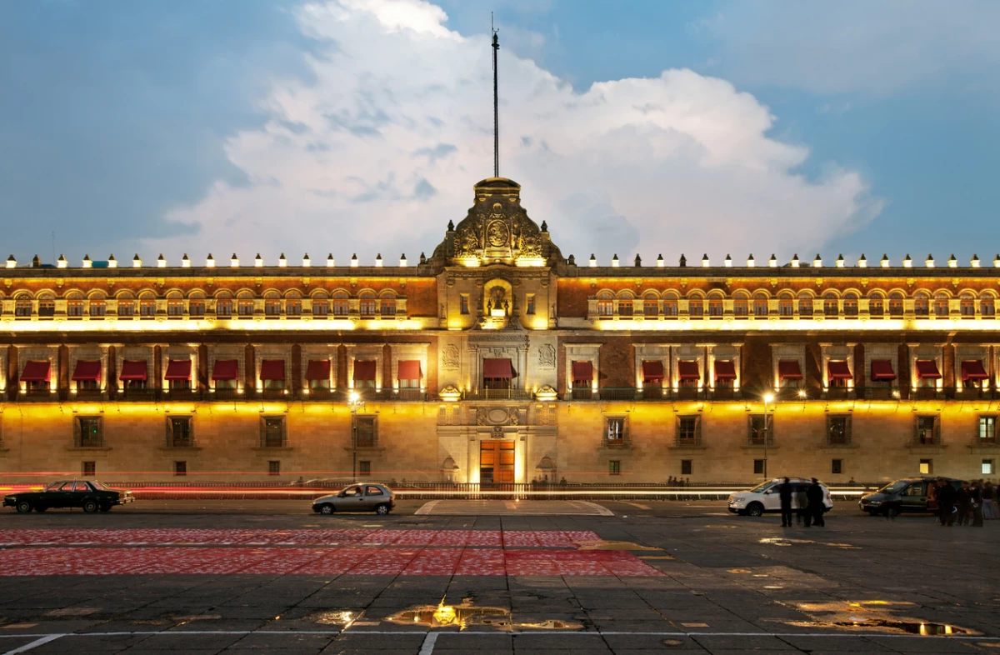
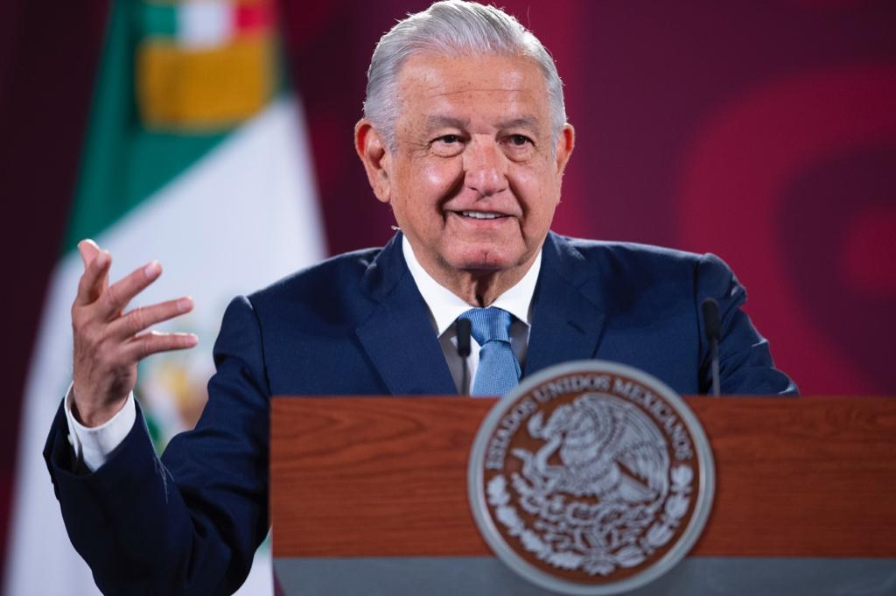
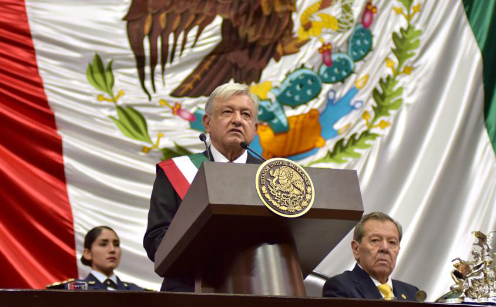
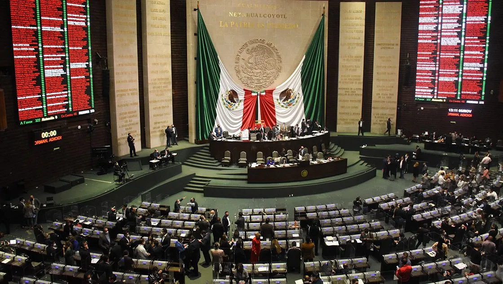

POLITICA
FORMA DE GOBIERNO
México es una república, representativa, democrática, federal y laica; compuesta por Estados libres y soberanos (y estos por Municipios) en todo lo concerniente a su régimen interior, y por la Ciudad de México (capital del país); unidos en una federación establecida según los principios de su Constitución. De acuerdo con esta ley fundamental, la soberanía y el poder público son origen y correspondencia del pueblo, y es este el que decide ejercerlo a través de un sistema de separación de poderes: Presidente (ejecutivo), Congreso de la Unión (legislativo) y un poder judicial, depositado en distintas instituciones, cuya cabeza es la Suprema Corte de Justicia. El sistema político mexicano se caracteriza históricamente por la preeminencia del Poder Ejecutivo sobre los otros dos.
El sistema político mexicano incluye órganos autónomos que sirven de contrapeso en áreas específicas (Fiscalía General de la República, CNDH, Auditoría Superior de la Federación, Banco de México, INEGI, Cofece, IFT e INAI).

PODER EJECUTIVO
El Presidente de los Estados Unidos Mexicanos es el titular del poder ejecutivo. Es, a la vez, jefe de Estado y jefe de gobierno. Asimismo, es el comandante supremo de las Fuerzas Armadas.
Es elegido mediante voto directo y universal. Una vez electo, entra en funciones el 1.º de diciembre del año de la elección. Su cargo dura un periodo de seis años, sin posibilidad de reelección; ni siquiera en el caso de haberlo desempeñado como interino, provisional o sustituto. El cargo de Presidente de la República solo es renunciable por causa grave, que deberá ser calificada por el Congreso de la Unión. En caso de muerte, destitución o renuncia, asume de manera inmediata y provisional el cargo el Secretario de Gobernación (si la ausencia es el día de la toma de posesión, sería el presidente del Senado, el mandatario provisional), después, con las reservas que contempla la constitución, corresponde al Congreso nombrar un sustituto o interino. Andrés Manuel López Obrador es el presidente de México para el período 2018-2024.

La vigente Constitución de 1917 prevé dicho cargo en su título tercero, capítulo tercero y es abordado por quince artículos. En ellos se especifican las obligaciones, facultades, requisitos y restricciones al cargo; especificaciones que van desde el mando de las fuerzas armadas; la titularidad de las políticas exterior, económica, desarrollo social y de seguridad pública; la promulgación y ejecución de las leyes emitidas por el poder legislativo; proponer nombramientos a cargos que requieren aprobación del Senado o la Suprema Corte; y diversas prerrogativas concedidas en otros artículos de la misma carta magna y las leyes federales.

PODER LEGISLATIVO
El Congreso de la Unión es el órgano depositario del Poder Legislativo federal. Este se conforma por una asamblea bicameral, dividida entre el Senado —constituido por 128 integrantes— y la Cámara de Diputados —que consta de 500 legisladores—.
La vigente Constitución de 1917 prevé este órgano en su título tercero, capítulo II, secciones I, II y III, y abordándolo en veintiocho artículos. En ellos se especifican las obligaciones, facultades, requisitos y restricciones del aparato legislativo; principalmente la facultad exclusiva entre los poderes de la unión (y repartida entre las dos cámaras) para estudiar, discutir, votar y emitir las iniciativas de leyes, reglamentos, códigos, normas y las reformas a todo ello, que se le presenten durante sus periodos de sesiones, es decir, posee la acción deliberativa para legislar en todos los asuntos del Estado mexicano. También sus deberes incluyen determinar la composición de la división política del territorio nacional; la facultad para cambiar de sede los poderes de la unión; aprobar la declaratoria de guerra del Presidente; la aprobación de iniciativas, rendición de cuentas, exigencia de comparecencias y eventuales remociones de los titulares o integrantes de los tres poderes de la Unión, incluido el presidente de la república; la elección del interino o sustituto de este último; y diversas prerrogativas que le conceden otros artículos de la carta magna y las leyes federales.
Las facultades exclusivas de la Cámara de Diputados incluyen publicar la declaratoria oficial de Presidente electo que expide el Tribunal Electoral; Coordinar y evaluar a la Auditoría Superior de la Federación; ratificar el nombramiento de secretario de Hacienda; aprobar el Plan Nacional de Desarrollo; la titularidad legislativa en relación al presupuesto e ingresos que proponga el poder ejecutivo; la facultad para decidir si se procede o no, contra algún miembro de los poderes de la unión (excepto el Presidente, cuestión que corresponde al Senado) en caso de cometer un delito, en los términos del artículo 111 constitucional; designar a los titulares de los órganos autónomos (INE, CNDH, Auditoría Superior, Banco de México, INEGI, Cofece e IFT).
Las facultades exclusivas del Senado incluyen legislar en materia de política exterior; aprobar o no los tratados y convenios internacionales firmados por el Presidente de la República; autorizar todo tipo de movimiento de las Fuerzas Armadas, ya sea dentro del territorio nacional (a través de la Guardia Nacional) o fuera de este, así como el tránsito de tropas extranjeras dentro del país; ratificar todos los nombramientos del ejecutivo en materia de Fuerzas Armadas y Política exterior; declarar la desaparición de los poderes estatales, designando un gobierno interino y estableciendo los métodos para su eventual sustitución; designar a los Ministros de la Suprema Corte, esto con la terna propuesta por el ejecutivo; legislar en materia de seguridad nacional, incluyendo la aprobación de la política gubernamental propuesta; designar al fiscal general de la República; decidir a través de decretos sobre límites fronterizos de los estados; la facultad para decidir si se procede o no, contra el presidente de la República en caso de cometer un delito, en los términos del artículo 110 constitucional.

PODER JUDICIAL
El Poder Judicial de la Federación está integrado por la Suprema Corte de Justicia de la Nación, el Tribunal Federal Electoral, el Consejo de la Judicatura Federal, los Juzgados de Distrito, los Tribunales Colegiados de Circuito y los Tribunales Unitarios de Circuito. Sus fundamentos se encuentran en el Título III, Capítulo IV (abarcando catorce artículos) de la Constitución Política de los Estados Unidos Mexicanos y la Ley Orgánica del Poder Judicial de la Federación. El Jurado Federal de Ciudadanos y los tribunales de los Estados y de la Ciudad de México, pueden actuar en auxilio de la Justicia Federal, en los casos previstos por la Constitución y las leyes. La administración, vigilancia y disciplina del Poder Judicial de la Federación, con excepción de la Suprema Corte de Justicia y el Tribunal Electoral, está a cargo del Consejo de la Judicatura Federal. En este poder y su conjunto de órganos, se deposita la facultad de impartir justicia en todos los aspectos institucionales del estado mexicano; la aplicación de las normas y principios jurídicos en la resolución de conflictos; y en todos los ámbitos de la aplicación del Derecho y la interpretación de las leyes en la sociedad (civil, penal, constitucional, mercantil, laboral, administrativo, fiscal, procesal, etc.)
La Suprema Corte de Justicia de la Nación es el máximo órgano judicial, tribunal constitucional y cabeza del Poder Judicial Federal. Está conformada por once Jueces o Magistrados, denominados Ministros; uno de los cuales es designado, por un periodo de cuatro años, como su Presidente, siendo este responsable de la dirección del organismo y mayor representante ante los otros poderes.
La vigente Constitución de 1917 prevé este órgano en su título tercero, capítulo IV, y abordándolo en cinco artículos. En ellos se especifican las obligaciones, facultades, requisitos y restricciones de la corte; principalmente la facultad exclusiva, entre los órganos del mismo sistema judicial, para estudiar, discutir, y emitir sentencias definitivas en controversias constitucionales o acciones de inconstitucionalidad, que surjan entre los poderes de la Unión, los poderes estatales, autoridades municipales, los órganos autónomos, o la contradicción de una norma con la carta magna. Es decir, le corresponde asegurar el orden establecido por la Constitución y mantener el equilibrio entre las diversas instituciones de gobierno. Sus deberes incluyen también, como última instancia legal, solucionar de modo definitivo, asuntos judiciales de gran relevancia social, a través de las resoluciones jurisdiccionales que dicta. Por lo anterior, y al tratarse del principal y más alto tribunal de naturaleza constitucional, no existe órgano ni autoridad que se encuentre por sobre ella o recurso judicial que pueda interponerse en contra de sus decisiones.
POLITICA ELECTORAL
La representatividad del poder público esta principalmente depositada en un Sistema multipartidista, donde los partidos políticos son el principal ente de participación ciudadana; todo ello regulado por instituciones electorales autónomas (Instituto Nacional Electoral, Tribunal electoral y Fiscalía electoral). El INE (bajo su anterior denominación IFE) fue creado con el propósito de hacer más transparente la organización de las elecciones en el país, luego del controvertido proceso electoral federal de julio de 1988, en que los partidos de oposición acusaron la manipulación de las cifras por parte de la Secretaría de Gobernación. Bajo su modelo, cada estado creó un organismo autónomo con propósito de organizar los comicios locales. Entre otras funciones, el INE está encargado de los asuntos relativos al Padrón Electoral y de registrar los partidos políticos que participan en los procesos comiciales federales.
En el año 2022 se encontraban registrados ante el INE siete partidos nacionales. Estos partidos son el Partido de la Revolución Democrática (PRD), el Partido Acción Nacional (PAN), el Partido Revolucionario Institucional (PRI), el Partido del Trabajo (PT), el Partido Verde Ecologista de México (Verde), el partido Movimiento Ciudadano (MC) y el Partido MORENA (Movimiento Regeneración Nacional). En caso de obtener menos de tres por ciento de los sufragios emitidos en las elecciones, un partido puede perder su registro.